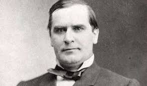

McKinley
Biography and Assassination
Legacy
William McKinley
25th President of the United States (1897-1901)

📜 Key Events in McKinley’s Life
1843 - Born in Niles, Ohio
1861 - Served in the Civil War
1876 - Elected to Congress
1897 - Became President
1901 - Assassinated